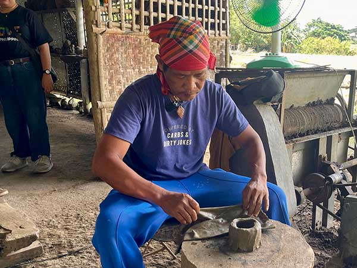

Pottery in Antique is a long-standing craft that involves shaping clay into functional and decorative items. It reflects the creativity and skill of local artisans who have preserved this tradition for generations.
Using simple tools and techniques, potters create jars, pots, and household items that are both practical and artistic.
The craft represents a connection between people, nature, and everyday life.

Pottery begins with collecting and preparing clay, which is shaped by hand or using a potter’s wheel.
The items are then dried and fired in kilns to harden and strengthen them.
Some products are decorated or glazed, adding aesthetic value to their functional purpose.
Made by skilled artisans.
Useful and decorative.
Passed through generations.
Sourced naturally.